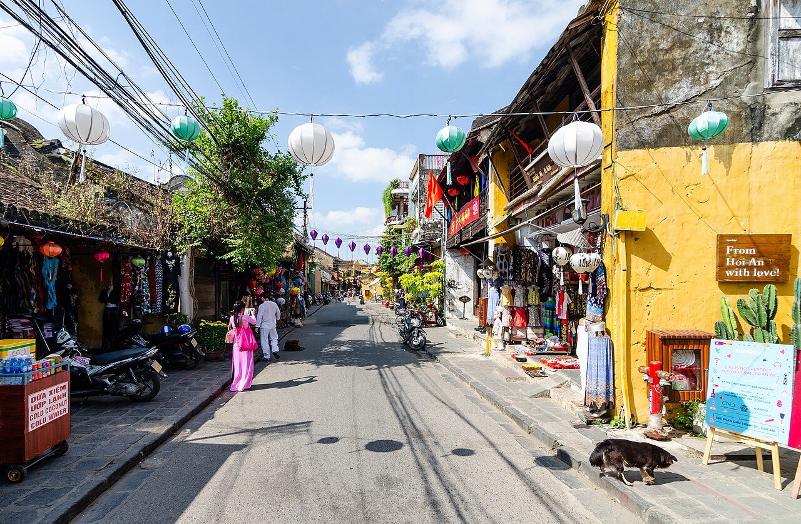
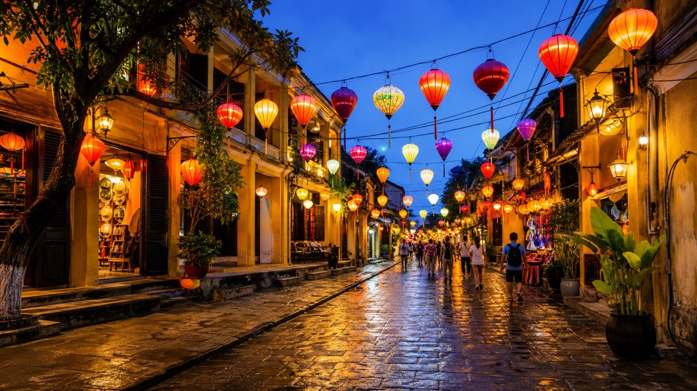
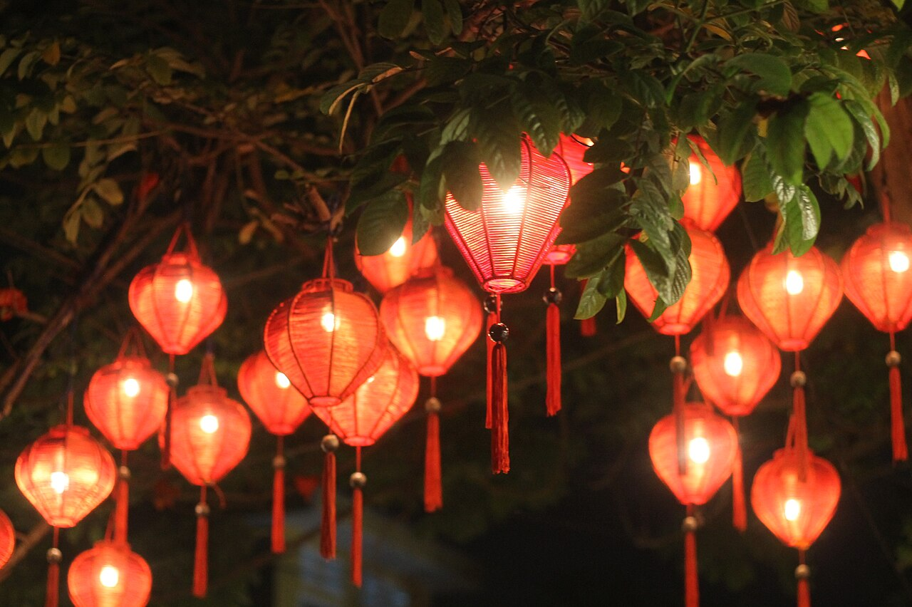
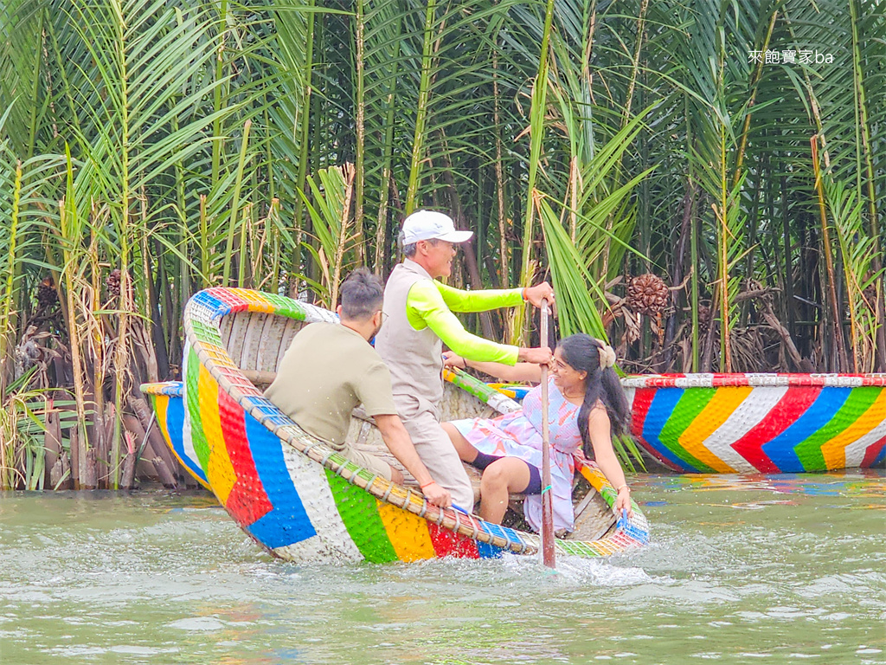

01 古鎮散步 Phố cổ Hội An
會安古鎮保留了昔日港口聚落的街道與建築景觀，也是 UNESCO 世界遺產。選幾條喜歡的巷子走走，注意屋簷、門窗與街邊小店。
- 推薦理由
- 不用走遍所有建築，也能從街道細節認識這裡。
- 家庭旅遊提醒
- 出發前確認古鎮參觀票適用的建築與進入規定；石板、階梯及人潮可能影響推車與輪椅通行。
02 / CENTRAL VIETNAM
位於越南中部的會安，適合用走路的速度認識。先逛黃牆老屋與小店，等傍晚的燈籠亮起；想換個風景，再到錦清一帶坐竹籃船，看水道和水椰林。
古鎮散步留到傍晚也很好；竹籃船安排在另一段時間，不必來回趕路。

A CLOSER LOOK
挑喜歡的體驗，留一點時間給休息與沿途風景。

會安古鎮保留了昔日港口聚落的街道與建築景觀，也是 UNESCO 世界遺產。選幾條喜歡的巷子走走，注意屋簷、門窗與街邊小店。

燈籠是會安街景裡很醒目的色彩。傍晚至入夜，可沿古鎮與河岸看看街道燈光；若想參加特定節慶，需另外確認日期與現場安排。
資料來源：官方：會安古鎮與燈籠介紹

錦清的水椰林與水道，可以搭乘圓形竹籃船體驗。它和古鎮散步是不同路線，需另外安排交通與活動時間。
MAKE TIME FOR THE JOURNEY
以下為編輯行程建議，並非固定套裝路線；請依天氣、同行者體力與實際預訂調整。
選擇符合同行者需求的乘船方式，結束後安排午餐與休息。
挑幾條街與有興趣的建築，不把所有參觀點一次排滿。
沿熟悉的路線看夜景，預留返回住宿或搭車的時間。
每一天保留一個可以省略的安排，比趕完清單更容易享受旅行。
BEFORE YOU GO
交通概況參考：峴港官方旅遊入口：Hoi An Ancient Town，更新日期：2026-11-15。班次、費用及接送服務另行確認。
以上為規劃建議，不是場館設施或服務保證。
WHERE NEXT?
內容更新：。行程、推薦理由與家庭提醒為編輯建議；票價、場次及開放狀況請於出發前向官方確認。照片為景觀紀錄，不代表當日天氣或最新設施。
網路圖片縮小尺寸並作版面裁切；CC BY-SA 圖片的衍生版本沿用相同授權。使用者提供照片依其提供脈絡標示，來源狀態如實記錄。
![This Photo was taken by Supanut Arunoprayote. Feel free to use any of my images, but please mention me as the author and may send me a message. (สามารถใช้ภาพได้อิสระ แต่กรุณาใส่เครดิตผู้ถ่ายและอาจส่งข้อความบอกกล่าวด้วย) Please do not upload an updated image here without consultation with the Author. The author would like to make corrections only at his own source. This ensures that the changes are preserved.Please if you think that any changes should be required, please inform the author.Otherwise you can upload a new image with a new name. Please use one of the templates derivative or extract.](https://commons.wikimedia.org/wiki/File:Hoi_An_(I).jpg){kind=link}